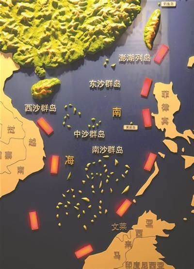
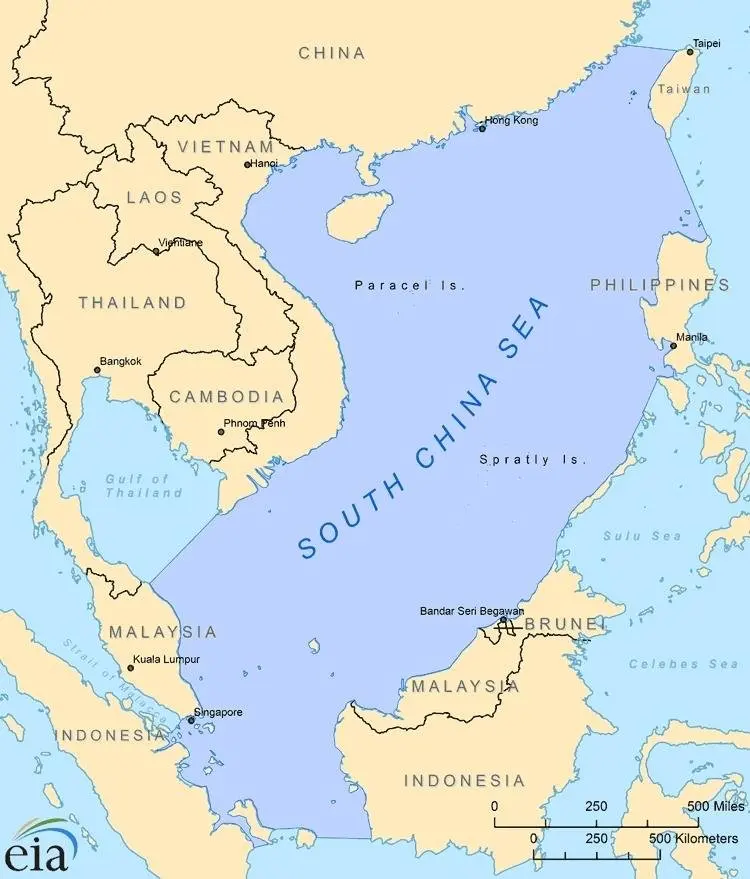
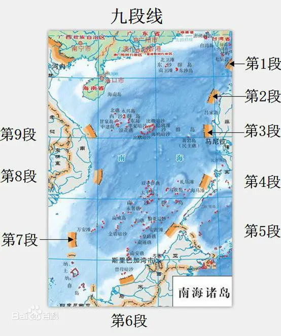
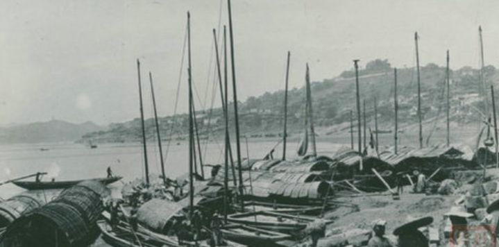
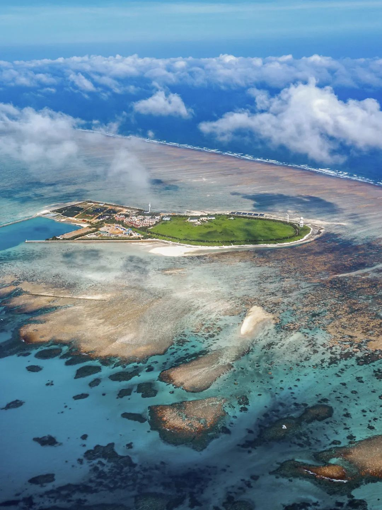
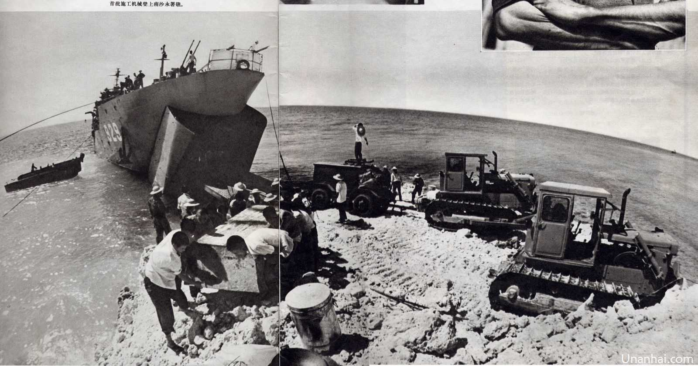
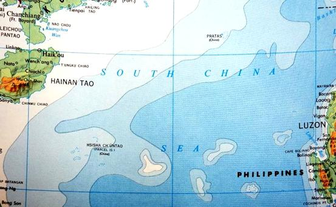

南海概况
“Overview of the South China Sea ”
位于中国大陆的南方，是太平洋西部海域，中国三大边缘海之一，
该海域自然海域面积约350万平方公里，为中国近海中面积最大、水最深的海区，
平均水深1212米，最大深度5559米。
中国领海由渤海(内海)和黄海、东海、南海三大边海组成。
其中南海南北纵跨约2000公里，东西横越约1000公里,
北起广东省南澳岛与台湾岛南端鹅銮鼻一线，南至加里曼丹岛、苏门答腊岛,
西依中国大陆、中南半岛、马来半岛，东抵菲律宾,
通过海峡或水道东与太平洋相连，西与印度洋相通,
是一个东北-西南走向的半封闭海。

九段线
南海诸岛归属范围线，是中国对南海海域权益边界的一种画法。在中华人民共和国版图中，南中国海里有9条断续线组成的U形线，通常称为九段线，线内区域为中国南海。因此，九段线区分了南中国海(面积350万平方公里)与中国南海(面积210万平方公里)。

南中国海
是地理上的水域，我国大陆南部，太平洋西部，连接这太平洋与印度洋的交通要道，面积350万平方公里，为世界第三大海，大部分属于热带。南海海域中有超过200个无人居住的岛屿和岩礁。主要群岛有纳土纳群岛、阿南巴斯群岛、南沙群岛、中沙群岛、东沙群岛、西沙群岛等

中国南海
U型九段线内的海域都属中国的南海，中国南海属于南中国海的一部分，面积约为210万平方公里，占南中国海面积的60%，其中包括有南沙群岛、中沙群岛、东沙群岛、西沙群岛。南海有丰富的油气矿产资源、滨海和海岛旅游资源、海洋能资源、港口航运资源、热带亚热带生物资源，是中国最重要的海岛和珊瑚礁、红树林、海草床等热带生态系统分布区。
历史概况
“Profiles in History”
东汉
涨海崎头，水浅而多磁石。——《异物志》
涨海：古代对南海的称谓。崎头：古代对海中岛礁的称呼。
三国
句稚，去与游八百里…崎头，出涨海，中浅而多磁石。——《南州异物志》
磁石：暗沙、暗礁。
唐朝
五岭之南，涨海之北…自汉以后，历代开拓。——《通典》
中国先民开发南海的记载开始频见于典籍之中。


北宋
广州南海郡…，七日至九乳螺洲，又三日至不劳山。——《武经总要》
九乳螺州：今西沙群岛。
南宋
海南四郡之西南洋…，传闻东大洋海，有长砂石塘数万里。——《岭外代答》
“长砂”(长沙)“石塘”统称南海诸岛
元朝
石塘之骨，由潮州而生。迤逦如长蛇，横亘海中，越海诸国。——《岛夷志略》
以石塘概称的南海诸岛的地形地貌进行了描述。
明朝
千里石塘在崖州海面之七百里外，…万里长堤出其南，波流甚急。——《海槎馀录》
千里石塘指西沙群岛，万里长堤指南沙群岛。
清朝
自琼崖，历铜鼓，经七州洋、四更沙，周遭三千里，躬自巡视，地方宁谧。升定海总兵官。“——《泉州府志》
广东副将吴陛从今海口出发巡视南海。


1929年
广东陆军测量局测绘《西沙群岛图》
1939年
美国出版的《中国地图》:完全认可南海诸岛归属中国，南石(黄岩岛)属于中国。
1942年
意大利编制的东亚地图(AISA ORIENTALE)图示显示中国南海，西沙群岛用点线围圈，红色字体标记“ChungKwo”
1947年
美国出版《古德世界地图集》中东沙群岛标注“China”,西沙群岛标HSISHA CHUNTAO也括注“China”。